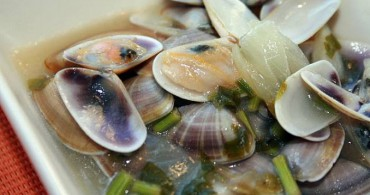

La manzanilla Para beneficiarnos de sus propiedades podemos consumir manzanilla en infusión o bien aplicarla de forma tópica. Tiene propiedades antiinflamatorias, antibacterianas y es un gran digestivo.
Para cultivar manzanilla, es importante que siembres la planta durante la época de verano, y que lo hagas en una tierra compuesta por dos partes de tierra negra y una de arena de río para que la planta pueda drenar bien el agua.
Coloca la planta de manzanilla en un lugar -ya sea dentro o fuera de la casa- en el que le dé abundante luz solar, aunque no de manera directa.
Riega tu planta cada día si quieres que crezca de forma sana. Si dejas que tu manzanilla se seque deberás volver a plantarla y comenzar otra vez todo el proceso.
El momento de cosechar manzanilla comienza cuando las flores se abren. Antes de recogerlas, debes fijarte en que las flores estén completamente abiertas.
A la hora de recolectar las flores de la manzanilla, deberás tener cuidado de no cortar ninguna hoja o tallo de la planta para que después pueda volver a crecer.
Cuando hayas terminado de recolectar todas las flores de la manzanilla, colócalas sobre papel secante o papel de periódico y deja que se sequen en un lugar ventilado y apartado de la luz solar durante al menos una semana. Una vez secas, verás como los pétalos de las flores se desprenden quedando solo la parte amarilla de la flor.
Coquinas de huelva vino manzanilla
Receta fácil
Para 4 personas
En menos de 10 minutos

Ingredientes
600 gramos de coquinas de Huelva
6 dientes de ajo
Perejil picado
Sal, pimienta y aceite de oliva
un vaso de vino Manzanilla
Proceso PASO 1
Otra de fuente de barro!!!! Lavamos muy bien las coquinas, escurrimos y en una fuente de barro ponemos gran chorreón de aceite de oliva, picamos los ajitos y antes de que estén dorados añadimos las coquinas con el fuego medio fuerte, mareamos, salpimentamos, agregamos el vino manzanilla, sin dejar de mover para que abran todas, picamos el perejil, una vez abiertas todas bajamos el fuego dejamos cocer 2 ó 3 minutos más para que evapore el vino y listo!!! a disfrutar!!!!
Beneficios de la manzanilla